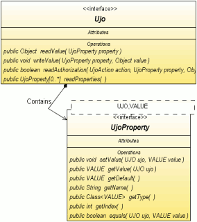

The UJO Framework tutorial
Content
What is UJO ?

UJO Framework
provides objects with a different architecture from JavaBeans,
where each property has its own static object with a generic type methods.
The original idea was a toy with generic data types of Java 5.0 however over time it appears,
that the architecture has some exciting features:
- an easy object introspection without a heavy PropertyDescriptor implementation
- value type safe solution
- a transfer of the UJO object properties (not values) by a collection
- the core of the building has two interfaces for an easy implementation
- the object-relation mapping (ORM) support
These properties open up new possibilities for the use in the J2EE mainly in a production
of generic operations over objects. Framework contains some tools for managing the UJO object
in addition. So what are the main advantages?
- the possibility to copy all or selected attributes from source to new object by a one statement (method)
- clone the object by a selected depth
- use a generic comparator
- find a property by its text name
- write a value by the found property to an another object or a collection of objects
- restore a default value of the property
- easy text conversions of the properties
- simplified work with an arrays (you can't initialize array before add method e.g.)
- generic toString() method for easy debugging
- easy visualization of UJO object(s) by JTable
- easy persistence of UJO to different formats include XML
- criteria tool for searching the Ujo objects in list
- the object itself recommends the availability of its attributes
- there is possible to implement a listener
to only one place
for each properties include children
- support of JavaBeans
- checking by unit tests
- tiny framework without further dependencies
- open source
UJO is an abbreviation for Unified Java Object
and they are all objects,
which implements an interface Ujo.
You can imagine the object UJO like a map (an object that maps keys to values)
with data access by methods of the key for example.
This key is made up of the implementation of the UjoProperty
including (among others) two type-safe methods:
There is possible to send the keys to another objects simply contrary of the methods of JavaBean object.
An example of usage can be a list of table columns sent to the data model type of TableModel
or references to the methods of the bean in a JSP page.
The core of the project are two interfaces
Ujo a
UjoProperty,
which have got three abstract implementation:
- MapUjo - easy for developers to implement with a sufficient performance for common applications based on the object HashMap
- ArrayUjo - hight performance objects are comparable to the speed of the JavaBeans, implemented by the object array
- BeanUjo - the implementation maps the keys directly to the methods of JavaBean object using Java reflection
I took inspiration for my work from project Cayenne (a solution for a persistence BO
ORM)
How ?
How to write the first UJO object? The fastest way is to use some abstract UJO implementation from this project and via few code lines we can make quickly
and easily our own implementation, too. Here is an example - the implementation of the Person class by an abstract MapUjo class.
The class code
An easy exemplary formation of the Person class:
import org.ujoframework.implementation.map.*;
public class Person extends MapUjo {
public static final UjoProperty<Person,String > NAME = newProperty("Name", String.class);
public static final UjoProperty<Person,Boolean> MALE = newProperty("Male", Boolean.class);
public static final UjoProperty<Person,Double > CASH = newProperty("Cash", Double.class);
}
Now, when the Person class is done, we can make its instance and enter or fetch some data. It´s possible to use one of two API methods for writing the object attributes:
- Person.writeValue(UjoProperty, Object), or
- UjoProperty.setValue(person, Object).
These methods are equivalent from a point of result, but the second solution offers the type safe access during the writing and reading of a value.
A show of the second (2) method use up:
import static org.Person.*;
Person person = new Person();
NAME.setValue(person, "Paul Ponec");
MALE.setValue(person, true);
CASH.setValue(person, 34.5);
String name = NAME.of(person);
boolean male = MALE.of(person);
double cash = CASH.of(person);
There is possible to use an extended API with a more obvious source code
to the property access since the UJO release 0.80.
The new solution allows to you a chaining more properties according to the model of a language
Groovy.
The new API extends the old one so that you can use an combination of both types.
import static org.Person.*;
Person person = new Person();
person.set(NAME, "Paul Ponec");
person.set(MALE, true);
person.set(CASH, 34.5);
String name = person.get(NAME);
boolean male = person.get(MALE);
double cash = person.get(CASH);
A note:
If you use a compilation parameter -Xlint:unchecked, an assembler can warn you of absent declaration of generic data types in the UjoProperty initialization sometimes.
There are three possibilities now:
- to complement the generic data types to the right side of the expression according to the left side, or
- to switch off the -Xlint:unchecked parameter. The switched off parameter is implied to the IDE NetBeans setting.
- the class can be equipped an annotation @SuppressWarnings("unchecked")
I've chosen this possibility myself, the code is getting clearer and in the case
of collision in the same line it´s possible to find it out easily.
- since version 0.72 is possible to use a type safe method newProperty(name, type) pro building a Property object.
The implementation of the equals() method
Our Person class has the equals() function implemented already, which inherited from parental class MapUjo.
But if you want by some reason to write your own Ujo implementation with this method, it´s enough to write into the class this code:
public boolean equals(Object obj) {
return UjoManager.getInstanceManager().equals(this, (Ujo) obj );
}
Implementation of the clone() method
Analogous to the equals method you can make the clone() method :
public Object clone() {
return UjoManager.getInstanceManager().clone(this, 1, null);
}
Implementation of the hash() method
A similar example of the hash() method implementation:
public int hash() {
return UjoManager.getInstanceManager().getHash(this);
}
All of these implementations are generally applicable to all the Ujo objects posterity.
Interface UjoExt
The most of information in this tutorial are related to a basic Ujo interface however since a version UJO Framework 0.80 is available an extended interface
called UjoExt for an easier utilization in a source code. The extended features are described by a slide show format in a different document
or you can try an UjoExt JavaDoc description.
Default values
A JavaBean property can have got a default value by the sample:
{
private Double cash = 10.0;
}
Also the UJO property can have got a default value. All the implementations of method Ujo.readValue(...) from this frameworks
replaces an undefined value (NULL) by the default value from the UjoProperty.
{
public static final UjoProperty<Person, Double> CASH = newProperty("Cash", 10.0);
}
Special features:
- the default value is available even if the original property value is changed
- if any property value is changed to a NULL then the property method returns the default value (the feature can be suppressd by overriding method: Ujo.readProperty)
- interface UjoProperty provides some methods to use the default value
How to create the JavaBean?
It´s easy to make the JavaBean from the UJO object. It´s enough to implement a setter and a getter for each attribute. An example of usage:
import org.ujoframework.implementation.map.*;
public class Person extends MapUjo {
public static final UjoProperty<Person, String> NAME = newProperty("name", String.class);
public static final UjoProperty<Person, Double> CASH = newProperty("cash", Double.class);
public void setName(String name) {
NAME.setValue(this, name);
}
public String getName() {
return NAME.getValue(this);
}
public void setCash(Double cash) {
CASH.setValue(this, cash);
}
public Double getCash() {
return CASH.getValue(this);
}
}
There is possible to use an special implementation BeanUjo to an implementation UJO features to your complete JavaBeans.
This BeanUjo implementation calls JavaBean setters and getters by a Java reflection for writing and reading values (fields).
A name of Ujo property must accord with a related name of the JavaBean attribute (methods) in the implementation.
There is allowed to use a primitive types of the object fields if you can (e.g. Double -> double).
import org.ujoframework.implementation.bean.*;
public class Person extends BeanUjo {
public static final BeanProperty<Person, String> NAME = newProperty("name", String.class);
public static final BeanProperty<Person, Double> CASH = newProperty("cash", Double.class);
private String myname;
private Double mycash;
public void setName(String name) {
this.myname = name;
}
public String getName() {
return myname;
}
public void setCash(Double cash) {
this.mycash = cash;
}
public Double getCash() {
return mycash;
}
}
Keep the mind that getters of implementation BeanUjo don't call a method Ujo.readProperty(..) similar like setters don't call Ujo.writeProperty().
For example this is the reason why method getCash() can't return a default value from UjoProperty for example.
The way NAME.getValue(...) works fine.
XML serialization
Usage of an UJO serialization is very simple, that is how the code looks like:
Person person = somePersonProvider().getPerson();
UjoManagerXML.getInstance().saveXML(writer, person, null, "My Export");
person = UjoManagerXML.getInstance().parseXML(inputStream, Person.class, "My Import");
A content of created XML is now:
<?xml version="1.0" encoding="UTF-8"?>
<body>
<Name>Paul Ponec</Name>
<Male>true</Male>
<Cash>34.5</Cash>
</body>
List property
It´s often very useful some attribute to contain a list of another UJO objects.
It´s possible to make the ArrayList<UjoItem> type object though, but preferable is to use for an attribute the ListProperty class.
The first reason is a clearer content of an export to XML, because an export doesn't contain the information about the data type items of the list.
I recommend to read up API for more detailed information.
Recommended solution for the implementation of a link 1:N for the Person - Child objects.
public class Person extends MapUjo {
public static final UjoProperty <Person,String> NAME = newProperty("Name", String.class);
public static final ListProperty<Person,Child> CHILDS = newListProperty("Child", Child.class);
}
Hidden elements
What to do, when you need to export only some of the UJO object attributes and to ignore the rest?
There is the readAuthorization(...) method for this case.
This method can allow a participation of the chosen attributes in dependence on:
- the action type (XML export, Resource Bundle export, ...) include an action context
- the attribute
- his value
On the following example we will illustrate, how the suppression of the NAME attribute by an export into XML looks like:
public boolean readAuthorization(UjoAction action, UjoProperty property, Object value) {
switch(action.getType()) {
case ACTION_XML_EXPORT:
return property!=NAME;
default: {
return super.readAuthorization(action, property, value);
}
}
}
Notice: because all the Properties of the UJO object are the final type, it is not necessary
to compare by the equals() method, but it is possible to use a quicker operator ==.
The attributes
The UJO Framework enables to write some properties like a XML attribute of the element contrary of the XML child element (it is a default feature).
The solution is to use an annotation @XmlAttribute by next sample:
@XmlAttribute
public static final UjoProperty<Ujo,String> NAME = newProperty("Name", String.class);
Body value
There is possible print the a one property value per object like an element body text.
For the purpose is designed an annotation @XmlElementBody by next sample:
@@XmlElementBody
public static final UjoProperty<Ujo,String> MALE = newProperty("Male", String.class);
A content of the new XML file using both annotations @XmlAttribute and @XmlElementBody is next:
<?xml version="1.0" encoding="UTF-8"?>
<body Name="Paul Ponec">
true
<Cash>34.5</Cash>
</body>
Some more features:
- there is recommended that only one property was signed by the annotation XmlElementBody in the class
- if more XmlElementBody annotated properties are identified than the framework will be considered the valid property with the highest index
- if a property has an annotation XmlAttribute so the XmlElementBody is ignored.
Support of the JTable component
The UJO Framework contains a support for the UJO object list displaying in the JTable. For simple editable table creating it´s not necessary
to create any new class, you can only create the UjoTableModel class instance and to set it to the JTable object using the setModel() method.
Example of simple usage:
UjoTableModel<Person> model = new UjoTableModel(Person.NAME, Person.MALE, Person.BIRTH);
jTable.setModel(model);
List<Person> persons = new ArrayList();
model.setRows(persons);
Other possibilities of the UjoTableModel class::
model.addRow(new Person());
model.setValueAt("Prokop", 0, Person.NAME );
Person person = model.getRowLast();
model.sort(Person.NAME);
model.sort(Person.NAME.descending());
Confrontation with the AbstractTableModel
For creating a new editable table data model you have to implement or overwrite a few methods of the AbstractTableModel abstract class.
- getColumnName(int column)
- getColumnClass(int column)
- getColumnCount()
- getRowCount()
- getValueAt(int rowIndex, int columnIndex)
- setValueAt(Object value, int rowIndex, int columnIndex)
All of these methods in the UjoTableModel class you´ll get implemented yet.
A name of the column and corresponding class are taken straightly from the UjoProperty object, a column list inputs in constructor.
Object-relation mapping (ORM)
The object-relation mapping (ORM) is a bridge between the object word
and the relation database. Some features:
- framework has a type safe query language which allows the java compiler find some syntax errors
- no confusing proxy business objects
- easy to configure the ORM model by java source code
- great performance
See a special page for more information.
What about the extensions?
If you need to create a descendant of the Person class, define in the descendant just new attributes.
The UjoPropertyList will be procured during the first call the readProperties() method by the help of the
Java reflection, all another values are taken from the cache.
public class PersonExt extends Person {
public static final UjoProperty<PersonExt,Float> WEIGHT = newProperty("Weight", Float.class);
public static final UjoProperty<PersonExt,Date> BORN = newProperty("Born" , Date.class);
}
The processing performance of the UJO objects is dependent on the implementation. During the processing of the MapUjo type object
is performance (writing/reading) approximately consistent with the operations writing/reading of the HashMap object.
The ArrayUjo solution provides the quicker implementation, the JavaBean object is the speediest.
There are the results of a simple mensuration in the following table.
Environment: Windows XP system, Intel DuoCore 1.66 MHz processor, 1GB RAM, JRE 6.0, UJO Framework 0.80.
The test description:
- a number of the test iterations is 5 million
- for each iteration a new instance of the Ujo interface will be created
- there is written the 10 attribute values into the object
- all the values will be read
- the object will be released for a Garbage collector.
- the result values are an arithmetic average from four tests
- executing clasess: ArrayUjoTest, MapUjoTest, BeanUjoTest, PojoTest from JUnit tests
| Implementation |
Performance
[sec per 5M loops] |
Ratio
[%] |
| ArrayUjo |
1.972 |
177 |
| MapUjo |
6.651 |
597 |
| BeanUjo |
20.995 |
1883 |
| JavaBean |
1.115 |
100 |
It´s evidently from the table, that the performance of the ArrayUjo implementation is high and it gets near to the JavaBeans object performance.
The results can be affected in some cases by costs of making an instance of a primitive values.
However the speed of JavaBeans dramatically drops near to BeanUjo value
in case a property access via Java reflection tools.
The XML serialization of UJO objects is based on a quick SAX parser, performance tests are very favorable,
mainly a comparison to XML serialization implemented in JER (classes XMLEncoder, XMLDecoder).
A measurement was provided on the same PC like the last test (UJO release 0.84), all results are shown in next table.
A test description:
- all business object are the same type (in scope one test)
- every one business object contains 11 attributes include one for a recursion type of ArrayList
- count of total instances is 6.000 objects
- maximal deep is 4 object levels
- test was performed by a class XmlSpeedTest2 (second pass) from JUnit tests
- the result values are an arithmetic average from four tests
| Implementation |
Time of serialization
[sec] |
Time of deserialization
[sec] |
Total ratio
[%] |
| ArrayUjo |
0.332 |
0.305 |
93 |
| MapUjo |
0.340 |
0.340 |
99 |
| BeanUjo |
0.375 |
0.336 |
104 |
| XMLEncoder |
2.797 |
1.770 |
668 |
| JAXB |
0.211 |
0.473 |
100 |
Conclusion: The XML serialization implemented in UJO Framework is approximately six times faster
in comparison with the XMLEncoder persistence implemented in JRE 6.0.
The UJO speed of serialization is slightly smaller than the speed of the great JAXB framework,
however all UJO implementations got a the shortest time of deserialization.
Other possibilities of usage?
What are the other possibilities of usage?
Commons
- UjoCriteria allows to search an Ujo objects from the list of Ujo objects.
- PathProperty class is an composite of a UjoProperty objects.
The PathProperty class can be used wherever is used UjoProperty - with a one important exception:
do not send the PathProperty object to methods Ujo.readValue(...) and Ujo.writeValue(...).
- FactoryUjo is a generic object maker.
Persistence
- you can save all the hierarchy of UJO objects in XML format by the help of the UjoManagerXML class. For another information see the UjoXml class.
- UJO object can be saved in the PropertyResourceBundle format.
- UJO object will be possible to save in CSV format in some future version.
- The usage of UJO objects in the framework Cayenne (solution for the ORM).
The Cayenne works with persistent classes analogous to implementation MapUjo. Because the persistent objects are created by pattern,
the pattern can be change easily in that way, it will implement the Ujo interface.
Servlet
The UJO usage in servlets is not described in detail yet, but the basic idea for the text characteristics processing of the ServletRequest object is circa here:
ServletRequest request;
UjoTextable person;
UjoProperty personName;
...
person.writeValueString(personName, request.getParameters(personName.getName());
Referential Application
The jWorkSheet is a referential implementation of the framework.
This Swing project is powered by the UJO Framework. It is published under an open license on a home page http://jworksheet.ponec.net/.
The jWorkSheet is an application for time tracking different projects.
You can study the usage of the UJO object persistence and its collaboration with a graphics component JTable on the source codes.
The jWorkSheet application characteristics::
- all the persistence is realized by the UJO framework. It is used the saving into XML format in project,
parameters are saved into the Resource Bundle format.
- all the data models of the JTable object are straight the instance or a child of the UjoTable class.
- the small size of jWorkSheet application is interesting, it takes up about 170 kB including the UJO library.
The jWorkSheet project is written in Java 5.0, the development was realized by the NetBeans IDE.
PekiLine - the desktop application manages your personal (English) vocabulary to learn.
- the application can get an translation word from a Google dictionary include a pronunciation in case you are on-line
- you can modify all items of vocabulary, sort columns or mark word to a print
- personal data are stored in a XML file located in the user home subdirectory
Where ?
The project home page: http://ujoframework.org/
Referential implementation: http://jworksheet.ponec.net/.
Another implementations: (here can be referenced your project).
License
The code was released under the Apache License, Version 2.0.
Copyright 2007 Paul Ponec
Licensed under the Apache License, Version 2.0 (the "License");
you may not use this file except in compliance with the License.
You may obtain a copy of the License at
http://www.apache.org/licenses/LICENSE-2.0
Unless required by applicable law or agreed to in writing, software
distributed under the License is distributed on an "AS IS" BASIS,
WITHOUT WARRANTIES OR CONDITIONS OF ANY KIND, either express or implied.
See the License for the specific language governing permissions and
limitations under the License.
FAQ
- Q: Is the list of the Properties objects ordered by a natural order?
- A: The result depends on the implementation. All properties are sorted by a property index by default.
All implementations from the UJO Framework returns its properties in a natural order on condition that the properties
where created by a factory method newProperty(..). The ArrayUjo has assigned all indexes explicitly.
If the index numers have got the same value then the natural ordering is no guarantee by a Sun Microsystems specificaton.
- Q: What will be the retrieved UJO values, which were not initiated yet?
- A: The result depends on UJO object implementation. The default implementation (AbstractUjo) returns a default value from UjoProperty.
- Q: Are somewhere any other UJO usage?
- A: You find another examples in the jWorkSheet application and in the JUnit tests too.
- Q: Isn't the UJO work slow?
- A: Some implementations are very quick, see the chapter Performance.
See the Wiki tutorial for more information.
Release notes
- 2009/09 - the version 0.90 supports ORM for 6 databases
- 2008/09 - the version 0.80 brings an extended interface - UjoExt
- 2007/10 - the first public version 0.70 is released under Apache License, Version 2.0
See a detail release notes in a text format for more information.